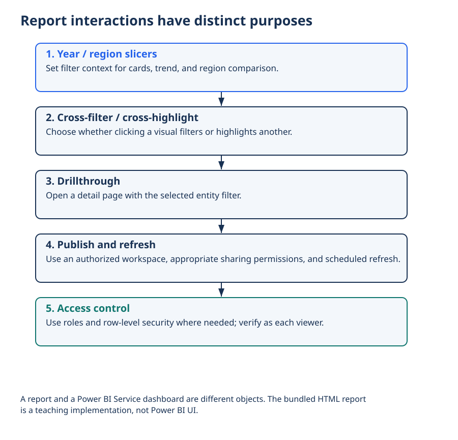

Lecture 21: Power BI Visualization
Core visuals, formatting that matters, slicers and interactions, multi-page reports, and publish overview — end of Module 4.
1. Learning Objectives
- 1 Build bar, line, matrix, card, and map visuals appropriately.
- 2 Format titles, labels, and tooltips for clarity.
- 3 Configure slicers and edit interactions.
- 4 Structure a multi-page report with navigation.
- 5 Outline publish and share steps at a high level.
2. Core Visuals in Practice
- Card: single KPI
- Bar/column: compare categories
- Line: trend over time
- Matrix: crosstab with drill
- Map: geographic patterns (with location fields)
Apply L16–L17 principles: encoding first, then Power BI formatting.
3. Formatting That Matters
- Descriptive titles
- Data labels when exact values matter
- Consistent number formats
- Tooltip fields that answer follow-ups
- Theme alignment across pages
4. Slicers & Interactions
Add slicers for decision dimensions. Use Edit interactions to control which visuals respond. Avoid accidental cross-filter noise.
5. Multi-Page Reports
Page 1 = overview decision; detail pages for drill. Navigation buttons or a simple page menu. Keep filters synchronized when that matches the workflow.
6. Publish Overview
Publish to Power BI Service (workspace), set sensitivity labels if required, share with app or workspace permissions. Document refresh schedule. (Institution-specific steps may vary.)
7. Practical — Mini Sales Report
- KPI cards: total, count, average
- Trend line by date
- Bar by category
- Slicers for region/time
- One detail page with matrix
8. Knowledge Check
Q1. Best visual for a single KPI highlight:
9. Summary · End of Module 4
- Foundations + principles + advanced forms + dashboard thinking + Power BI import + Power BI visuals.
- Next module deepens modeling and DAX (L22–L26).
10. What’s Next
Module 5 — Data Modeling & DAX begins with Lecture 22 (star schema and relationships in depth).
Worked practice: Test interactions and delivery
Test slicers, edit interactions, drillthrough and reset behavior. In your authorized Power BI workspace test refresh and View as role before sharing.
Interpretation check: A report is not a Service dashboard. Hiding columns or visuals is not security. Row-level security and workspace roles must be validated with realistic viewer permissions.
Setup, all labs, datasets, DAX measures and capstone guidance · Interactive retail teaching report
Report interactions have distinct purposes


Interpret: Does a screenshot demonstrate filter behavior?
No; test the interactive report.
Read diagram labels (mobile text)
- Report interactions have distinct purposes
- 1. Year / region slicers
- Set filter context for cards, trend, and region comparison.
- 2. Cross-filter / cross-highlight
- Choose whether clicking a visual filters or highlights another.
- 3. Drillthrough
- Open a detail page with the selected entity filter.
- 4. Publish and refresh
- Use an authorized workspace, appropriate sharing permissions, and scheduled refresh.
- 5. Access control
- Use roles and row-level security where needed; verify as each viewer.
- A report and a Power BI Service dashboard are different objects. The bundled HTML report
- is a teaching implementation, not Power BI UI.
Your reading progress
Completion is self-reported reading progress, not a mastery score. Use the lab and interpretation checks to assess understanding.